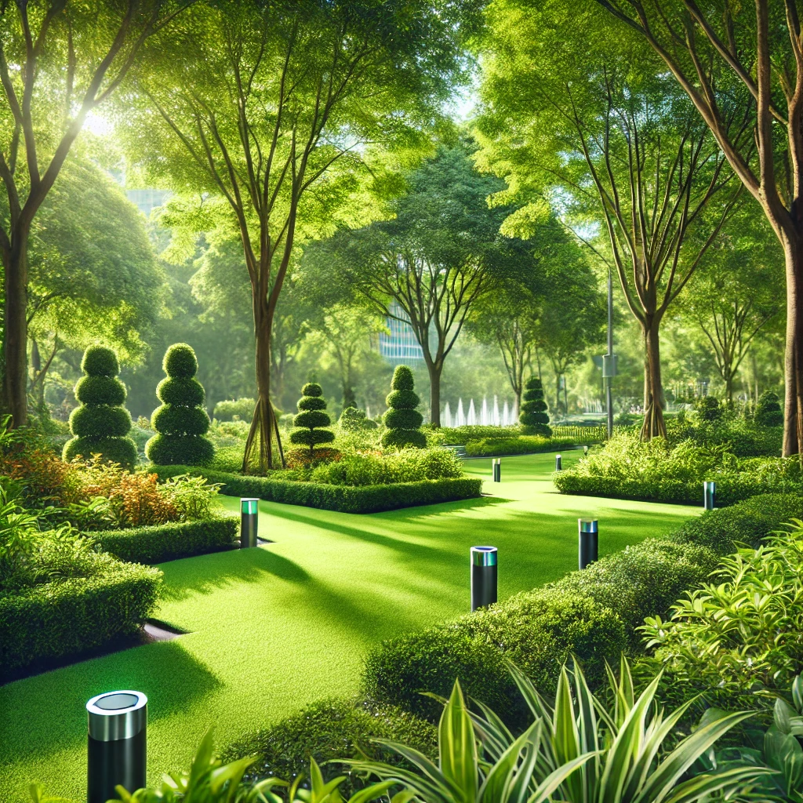

HydroMeld
Aporta a la sostenibilidad ahorrando mucho dinero. LLeva tus áreas verdes a otro nivel.

Cubrimos todas las necesidades de las áreas verdes con nuestros avanzados sensores
¿Listo para un hermoso ambiente? Descubre cómo HydroMeld optimiza el uso del agua y garantiza la salud de tus áreas verdes de manera eficiente y sostenible.
Las áreas verdes bien cuidadas mejoran la calidad de vida, con nuestros sensores inteligentes, podemos mantener un control exacto del riego, garantizando que cada espacio verde tenga una excelente calidad
Todo lo que Necesitas Saber
¿Tienes dudas? A continuación mostramos orgullosamente algunas de las respuestas de nuestros usuarios satisfechos
Maria Gracia Segura
Gracias a HydroMeld, los jardines de nuestras oficinas nos ha permitido no solo ahorrar agua, sino también mantener nuestras áreas verdes en excelentes condiciones todo el año
Hugo Lezama
En nuestro campus, la gestión de áreas verdes siempre fue un reto, pero HydroMeld lo ha hecho mucho más fácil. Ahora podemos ajustar el riego en función del clima. El sistema es intuitivo y ha mejorado la calidad del césped como nuestra eficiencia operativa

Laura Gómez
En nuestra municipalidad siempre hemos buscado formas de ser más sostenibles, y HydroMeld nos ha brindado justo lo que necesitábamos. Con HydroMeld, hemos visto una reducción significativa en el consumo de agua y pudimos gestionar los parques de manera más eficiente, lo que se traduce en un menor costo operativo y una mejor calidad de nuestras áreas verdes.

{kind=link}
{kind=link}
{kind=link}
{kind=link}
{kind=link}
{kind=link}
{kind=link}
Empieza tu Búsqueda
Descubre nuestra plataforma y empieza el cambio a la sostenibilidad y eficiencia en las áreas verdes
Recibe Notificaciones
Suscríbete Para saber nuestras actualizaciones